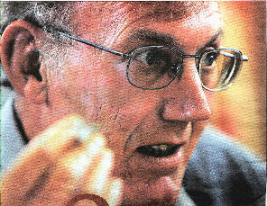
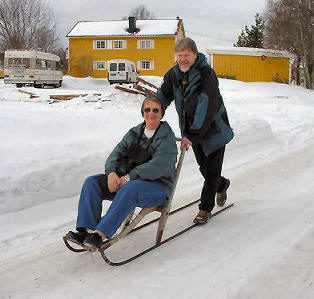
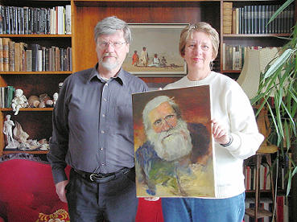
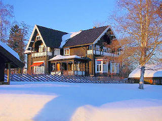
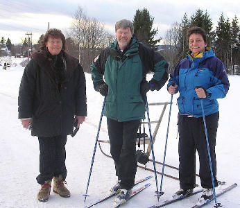
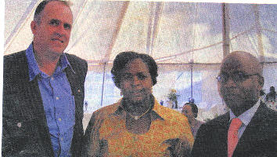
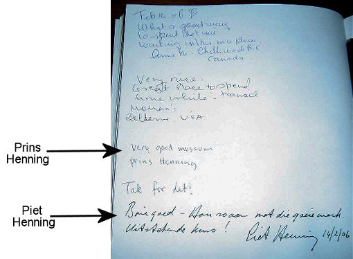

|
Indeks: |

Adv Jan Henning, SC, Adjunkhoof van Nasionale Vervolging en “een van die beste Staatsaanklaers wat hierdie land opgelewer het”, het op 31 Januarie 2006 weens swak gesondheid uit die diens van die Nasionale Vervolgingsgesag (NV) getree. In die geslagsregister van die Henning familie vind ons hom as b6.c4.d1.e5.f4.g6.h2. Jan Sarel Marthinus Henning *24-10-1951.
Jan Henning (54) wat die laaste drie jaar hoof van die NV se afdeling Vervolgings was, se laaste werksdag was 31 Januarie 2006. Pres. Thabo Mbeki het vroeg vanjaar goedgekeur dat hy weens mediese redes uit tree.
Jan het verlede jaar ‘n ernstige nekoperasie ondergaan en het nooit ten volle daarvan herstel nie. “Dit was met ‘n seer hart en baie herrinneringe dat ek Dinsdag my kantoordeur die laaste keer agter my toegetrek het”. Daarmee is ‘n loopbaan van byna 33 jaar as staatsaanklaer beëindig.
“Ek kon doodeenvoudig nie meer aangaan nie. As hoof van vervolgings landwyd was ek aan geweldige stres en uitdagings onderwerp wat my nekprobleem vererger het. Ek oordryf nie as ek sê dit het doodsake begin word nie,” het Jan gesê.
Jan was in sy lang loopbaan by verskeie opsienbare strafsake betrokke, wat gewissel het van moord, verkragting en handelsmisdaad — waarin hy gespesialiseer het — tot “veiligheidsake en klandestiene operasies tydens die ou bedeling”.
Hy was ook lid van Adv Klaus von Lieres und Wilkau, SC se span wat in die Konstitusionele Hof geveg het vir die behoud van die doodstraf. Hoewel hulle, in Jan se eie woorde, “elf nul verloor het” teen die eenparige uitspraak van die Konstitusionele Hof regters, glo hy steeds daar is mense wat doodmaak, net omdat dit vir hulle lekker is. Al wat daardie soort keer, is vrees vir die doodstraf.
In Regskringe is Jan Henning beskou as een van die beste aanklaers en vervolgingbestuurders wat die land opgelewer het en sy opvolger moet gróót skoene volstaan. Die Nasionale Vervolgingshoof, Vusi Pikoli, het gesê dat Jan Henning se uittrede is ‘n “verlies vir die NV. Hy het ‘n geweldige bydrae gelewer, veral tot die hantering van die afhandeling van groot agterstande in strafsake”
Alle Hennings kan trots op hierdie lid van ons Familiebond wees en hom ‘n rustige aftrede toewens.

Die webmeester van die Henning Familiebond se webwerf op Internet, Jannetta Lewis woon al vir baie jare in Durham in Engeland. Haar ma, Leonie Steyn (gebore Henning) (b7.c8.d8.e3.f1.) van Brakpan het vanaf die einde Februarie vir Jannetta en haar twee “rooinek” kindertjies gaan kuier.
Leonie het vir ons so ‘n bietjie van hul wedervaringe laat weet. Oor naweke het hulle tyd ingeruim om bietjie by Silloth in die Lake District te gaan afsaal. Volgens haar is hier meer water in die riviere en mere as wat daar in die hele Suid-Afrika is.

Die belangrikste aspek van haar vakansie is egter dat hulle kans gekry het om by drie families wat geskiedkundige bande met die Henning familie het, te gaan kuier. Eerstens het hulle kontak gemaak met Christopher Cooksen en sy vrou Babsie van Worcestershire. Christopher se ouma was b7.c8.d11. Annie Isabella Henning, gebore te Aliwal-Noord 23-1-1877. Sy was getroud met ‘n apteker, George Sidney Fuller, wat kort tevore vanaf Engeland na die Kaap van Goeie Hoop emigreer het. Hy was ook ‘n fotograaf (wat ‘n groot hoeveelheid van die geskiedkundige Henning foto’s van die Gert Frans Tak [b7.] geneem het) en die eerste persoon wat ‘n broeimasjien, vir die uitbroei van hoendereiers na Suid-Afrika ingevoer het. Christopher se ma, Alice, is op haar beurt ook met ‘n Engelsman, Cooksen, getroud. Christopher, sy broer en twee susters het egter al vier met Afrikaanssprekende eggenotes in die huwelik getree. Die “nuwe Suid-Afrika” het ook maar vir Christopher, Babsie en kinders verplig om na Engeland toe uit te wyk.
Dan het Leonie ook vir haar niggie, Elize Kruger en haar man te London gaan kuier. Elize is getroud met ‘n Moslem Indiër, met die naam Sjabir Raidhan. Elize moes die Moslemnaam, Zaynab Raidhan aanneem.
Die hoogtepunt van Leonie se besoek was egter ‘n besoek aan die Fowels-Landmark familie in Noorweë. Deur bemiddeling van Bondsekretaris, Olivier Henning het Leonie en Jannetta kontak gemaak met Emeritus Past. Bjarne Fowels-Landmark wat in Hjelmeland, Noorweë woon. Hjelmeland is egter nie gedurende Maart met normale vervoermiddels bereikbaar nie. Bjarne het hulle dus uitgenooi om vir hom by sy seun, Brynjar se huis in Oslo te kom kuier.

Bjarne Fowels-Landmark is ‘n Lewenslange Lid van die Henning Familiebond. Hy behartig gereeld die reeks in Ons Haantjie oor name met ‘n Bybelse oorsprong wat deur Henning families gebruik word. Sy ouma se ma was b7.c8.d1. Martha Johanna Elizabeth Henning *26-8-1857, getroud Zurich en die dogter van b7.c8. Olivier Johannes Gerhardus Cornelis Henning *1-12-1834. Sy ouma het met ‘n Noorweegse skeepskaptein, Landmark getrou en saam met hom na Noorweë geêmigreer. Hy en sy hele familie is baie trots op hul Henning en Suid-Afrikaanse voorsate.
Glo dit, want dit is werklik waar! Leonie en Jannetta se vlugkaartjies vanaf Engeland na Noorweë het slegs 2 pennies elk gekos!! Dit is wel ‘n klein vliegtuig wat op een van die sekondêre lughawens in Oslo geland het, maar dit is ideaal as mens net op ‘n plek wil kom. Die lughawebelasting en visum het Leonie egter R750.00 (R300.00 en R450.00) gekos. Nader aan die vertrekdatum het die vlugkaartjies se prys egter gestyg na £20.00 (± R220.00), maar Leonie en Jannetta HET ELKEEN NET TWEE PENNIES VIR HULLE KAARTJIES BETAAL. Die vlugkaartjies is glo so goedkoop want dis 'n vliegtuig met geen frilletjies. Jy koop alles op die vliegtuig wat jy nodig het soos kos, drinkgoed, speelgoed, parfuum, sterk drank, ander geskenke, ens Hulle maak glo hul geld met hierdie goed wat hulle verkoop.

Leonie vertel verder:
Ek is weer tuis in Durham, doodmoeg. 'n Wonderlike vakansie beskryf geensins hoe ek hierdie lang naweek ervaar het nie. Dit was eenvoudig fantasties! Heeltemal anders as enigiets wat ek nog ondervind het. Ek was al voorheen in Duitsland, waar dit ook vreeslik gesneeu het, en al die bome en alles vol sneeu was maar die atmosfeer van Noorweë is iets wat 'n mens nie vir 'n ander persoon kan beskryf nie.Daar is nie so baie mense in Noorweë nie. Omtrent soos die blankes in Suid-Afrika en gevolglik is die verkeer daar te wonderlik. (So ongeveer 4 miljoen). Dit het gladnie gesneeu terwyl ons daar was nie maar die sneeu het baie dik op alles gelê - dit moes dus baie en baie lank gesneeu het voordat ons daar gekom het. Alles was spierwit - sover as wat jy kyk was alles net wit. Dis iets ongeloofliks, onbeskryflik mooi.

Die Noorweegse meisies lyk vir my almal beeldskoon. Ek het slegs een meisie gesien wat vet was en heel moontlik was dit 'n toeris. Die taal is iets vreesliks. As 'n mens dit lees kan ek eintlik baie verstaan, maar as hulle dit praat klink dit kompleet soos 'n plaat wat agteruit gespeel word. Nie eers 'n enkele woord maak sin nie. Die Noorweegse alfabet bestaan uit 29 letters en dit klink vir my hulle gebruik net daardie ekstra 3 letters om al hul woorde te maak. Al wat jy hoor is ohahohahoh ... iets vreesliks. Jannetta het begin Noorweegs leer voordat ons vertrek het en gevolglik kon sy darem so 'n paar woorde sê.
Die mense by wie ons gebly het is verskriklik gaaf. Bjarne se grootouma en my oupa was suster en broer (sy die eerste kind b7.c8.d1. – Martha *1857 en hy die 8 ste kind b7.c8.d8. – Olivier *1869). Martha is op negentienjarige ouderdom getroud, terwyl Olivier 33 jaar oud was toe hy getroud is. Hulle kinders is dus ‘n hele geslag uitmekaar.
Ons het eintlik in Bjarne se seun, Brynjar se huis gebly wat nader aan die lughawe was. Oslo is die hoofstad van Noorweë en ek skat hy is so groot soos Bloemfontein. Die lughawebelasting moes ons natuurlik betaal - omtrent R300,00 en ek moes 'n visum uitneem. Vir Engeland het ek nie 'n visum nodig gehad nie maar ek moes een hê vir Noorweë. Dit het so R450,00 gekos. Jannetta het nie 'n visum nodig gehad nie. Ons sou nooit een betyds kon kry as dit nie was dat Jannetta se vriendin Elsa (Dr Henk Stoker, predikant in Pretoria se vrou) se dogter se vriend in die SA Ambasade kantore gewerk het nie. 'n Mens moet die visum self daar gaan haal en dis in London (6 ure se ry met motor daarheen) maar die maatjie van Elsa se kind het dit toe vir ons gaan haal en gepos. Die pos neem net 'n dag hierheen en hulle lewer dit by jou voordeur af.
Die mense in Noorweë verdien astronomiese salarisse en gevolglik is alles ontsettend duur. Dis iets ysliks hoe duur alles daar is. Brynjar se vrou, Olaug, is juis nou weer op pad na Pole om een van haar sitkamerstelle daar te laat oortrek. Dit kos minder om die meubels na Pole te neem en daar te laat doen as om dit in Noorweë self te laat doen. (Dit neem haar 2 dae daarheen en terug). Sy koop dan ook sommer allerhande goed in Pole en kom verkoop dit dan weer in Noorweë. Brynjar self is 'n geneesheer en werk die meeste van die tyd in ander dele van Noorweë. Hy kom net nou en dan huistoe. Daar is dan ook heelwat uitlanders wat daar kom werk - net om baie geld te maak en dan weer na hul eie land terug te gaan. Net soos wat baie van ons mense na Dubai of Saudi Arabië en daardie lande gaan om daar baie geld te gaan verdien. Die meeste mense in Noorweë het meer as een huis. 'n Huis in die berge is 'n algemene ding vir vakansies. Dit is iets heeltemal normaal om gereeld na Hongarye en Pole en daardie lande te ry en al jou goed daar te gaan koop. Selfs kombuiskaste, teëls en alles wat jy nodig het. Bjarne reis byvoorbeeld na Hongarye as hy aan sy tande wil laat werk. Alles is net te duur in Noorweë.
Feitlik al die huise/geboue in Noorweë is van hout. Dit lyk pragtig omdat dit dan in verskillende kleure geverf is. Hulle erwe is ook groot. Gladnie soos die Engelse huise nie. Die groot woonstel- of winkelkomplekse in stede soos Oslo is van klip aan die onderkant en hout van die tweede verdieping af.
Brynjar en Olaug se huis is ook klip onder en hout bo. Hierdie huis was vir my 'n baie groot ervaring. Dis die grootste huis wat ek nog in my hele lewe gesien het. 37 vertrekke. Kan jy jouself voorstel? Daar gaan trappe boontoe en ondertoe en oral toe. Ons het in die kelderverdieping geslaap in 'n reuse groot vertrek - hy het wel vensters wat uitkyk na buite omdat die huis so gebou is dat die voorkant en die agterkant nie ewe hoog is nie. Ek het ook nog nooit in my lewe soiets gesien soos die goed van hierdie familie nie. Hulle versamel ALLES. Met alles bedoel ek ALLES. Hulle het opgestopte diere, edelgesteentes, handtekeninge van bekendes, hulle skilder en het skilderye en ander versierings van alle soorte, hulle verf eiers en hou gereeld uitstallings van hierdie eiers by die klubs waaraan hulle behoort en nog 'n miljoen ander dinge. Jy kan die hele tyd in die huis rondloop en elke keer sien jy nog iets anders. Die biblioteek is so groot soos 'n klein dorpsbiblioteek. Olaug skryf boeke oor die maak van klere en voorskote en sulke goed. Dit lyk asof daar niks is wat sy nie kan doen nie. Brynjar skryf weer boeke oor die verf van eiers en dan natuurlik ook mediese tydskrifte. Hulle erf is soos 'n plot maar hulle noem dit nog steeds 'n huis. Baie huise staan so ver uitmekaar soos plotte by ons maar vir hulle is dit net 'n huis met 'n groot tuin. Op die oomblik is daar geen teken van 'n tuin nie - alles is net wit, maar hulle sê dat daar tog ‘n grasperk en blomme is in die somer.

Oor die afgelope twaalf jaar het mens al gewoond geraak aan negatiewe beriggewing oor die bou van Laekoste behuising vir die armstes van die armes. Bykans elke projek, landwyd, word gekenmerk deur korrupsie, wanadministrasie, nepotisme of swak vakmanskap.

Die “Noordelike Review” is ‘n streekskoerant wat in die Limpopo Provinsie versprei word. In die 4 April 2006 uitgawe verskyn daar egter ‘n uiters positiewe berig waarin die Limpopo Provinsiale Regering besluit het om mnr Carl Henning van Mununzwa Newco, te vra om 600 huise in die Vhembe distrik vir die “People’s Housing Project” (PHP) te bou. Dit is b1.c6.d14.e2.f3.g1. Carl Arthur Henning *19-7-1964 wat boer op ‘n plaas tussen Louis Trichardt en Elim.
Carl se oupa het reeds gedurende 1912 vanaf Rouxville na hierdie plaas tussen Louis Trichardt en Elim in die Soutpansberge getrek en hierdie familie is sedertdien baie bekende inwoners in die omgewing van Louis Trichardt.
Carl het skynbaar sulke goeie huise vir sy arbeiders gebou, wat die Provinsiale Regering so beindruk het, dat hulle besluit het om hom te vra om die 600 huise te Vhembe te bou.
Die LUR vir Plaaslike Regering en Behuising, Me Maite Nkoana-Mashabane het spesiale hulde gebring aan mnr Carl Henning vir sy bydrae tot goeie verhoudinge tussen werkgewers en werknemers en die verskillende rassegroepe in die gebied.
‘n Foto van b1.c6.d14.e2.f3,.g1. Carl Arthur Henning en die LUR vir Plaaslike Regering en Behuising, Maite Nkoana-Mashambane en die Hoof van die Departement, Sam Rampedi, tydens die geleentheid waartydens hulde aan Carl Henning gebring is

Ons wil nie in elke Nuusbrief kla oor geld nie, maar sonder geld kan ‘n Familiebond ook nie bly voortbestaan nie. Daarom sal dit altyd êrens in die Haantjie figureer. Dit is egter vir ons aangenaam om te berig dat die meerderheid van ons lede gehoor gee aan ons versoek om na vermoë bydraes te lewer. Dit bring mee dat die Familiebond in ‘n beter finansiële posisie is, as wat ons sou gewees het as ons ‘n vaste bedrag ledegeld probeer hef het. As ‘n persoon net kan bekostig om ‘n bydrae van R10.00 per jaar te lewer, is dit goed so! En ons sê baie dankie aan so ‘n lid, want dit openbaar ‘n positiewe gesindheid. Dieselfde geld iemand wat glad nie kan bekostig om ‘n bydrae te lewer nie en ons sodanig verwittig. Ons is net so dankbaar vir al daardie lede — die meerderheid — wat vir ons groter bydraes maak. Selfs Erelede en Lewenslange Lede op wie geen verpligting rus om enige verdere bydraes te maak nie, dra op gereelde grondslag by.
Ons vermeld graag, met groot dank, die name van lede wat oor die afgelope drie maande bydraes van R200.00 en meer gemaak het:
Herman (HF) Henning van Rietfontein, Pretoria, ‘n Lewenslange Lid — R500.00
Jan (JC) Henning van Hartbeesfontein — R350.00
Pieter (PB) Henning van Sinoville, Pretoria — R 300.00
Mev Daphne Harker (gebore Henning) een van ons oudste Erelede stuur elke jaar gedurende Februarie ‘n bydrae van R200.00
Mev Sylvia (SD) Grobler (gebore Henning) van Randparkrif, Randburg — R200.00
Jacobus (JC) Henning van Noordstad, Bloemfontein — R200.00
Pieter (PH) Henning van Musgrave, Durban — R200.00
Gerrit (GJD) Henning van Nelspruit — R200.00
Dr Tjol (MEJ) Henning van Lyttelton — R200.00
Pieter (PFJ) Henning van Rossmore, Johannesburg — R200.00
Dan wil ons ook hartlike dank uitspreek teenoor Dr Nico (NGC) Henning, ‘n Lewenslange Lid van Lyttelton, Centurion en Henning (I H) Pieterse van Rietvalleipark, Pretoria wat op gereelde grondslag, maandeliks per debietorder bydraes lewer. In plaas van een groot bydrae per jaar, kan lede oorweeg om ‘n klein bedraggie van selfs so min as R20.00 per maand per debietorder by te dra Hierdie tipe bydraes is van onskatbare waarde.

Past. Bjarne Fowels Landmark van Hjelmeland, Noorweë behartig die afgelope paar jaar vir ons hierdie reeks oor name met ‘n Bybelse oorsprong, wat deur Henning families gebruik word.In hierdie uitgawe bespreek hy die naam Martha of Marta:
Martha/Marta, is a Greek name, from Aramaic wife, housewife or mistress. Martha was the sister of Lazarus and Mary, good friends of Jesus. Jesus always came on visit and was put up at them when visiting Jerusalem, and especially at Easter. Martha is the proud housewife, active, practical, clever, but too busy and intolerant. On one occasion she was busy in the kitchen and envied her sister, who only sat listening by the feet of Jesus. Jesus rebuked Martha, who was always loaded with all sorts of worries.
When her brother Lazarus died, St. Luke tells us how strong faith she had in Jesus. Martha confronted Jesus with his own words that he is the Resurrection and Life. She did not give in until Jesus woke up her dead brother.
An old legend tells how Martha conquered a dragon.
The painters in the Middle Ages painted her as a proud housewife with a spell-bound dragon around her legs.
She is the protector for health and social workers.
Unfortunately the Lutheran church has never been positive to Martha. In fact Martin Luther once said in one of his services that Martha’s work had to be punished and regarded as nothing!
We find the name more than 200 times in the Henning family.

Hierdie interessante brief is van Piet Henning (b6.c1.d3.e5.f3.g9.h1.Pieter Hendrik) ontvang
Ek vlieg deesdae gereeld Italië toe aangesien ek daar werk. Ek kom toe op die Rijks-Museum se uitstalling af in die lughawe Schiphol, Amsterdam. Dit was 'n plesier om goeie kuns van die 17 de eeu te sien. Ek is geen kuns kenner nie en het ook nie die kunstenaars herken nie. “In fact”, ek is “clueless” en volg maar my oorlede Pa (Hendrik) se resep wat hy toegepas het op wyn proe. Hy het beweer enige persoon is 'n wyn kenner. Dis maklik, as jy die wyn proe en dit is lekker, dan is dit goeie wyn. Net so is dit met die kuns vir my. As ek hou van wat ek sien en ek geniet dit, dan is dit goeie kuns. Die uitstalling was inderdaad goed. Een ou het blomme geverf wat vandag na 300 jaar so helder en pragtig lyk dat ek dit beswaarlik kon glo.
Daar was toe 'n boek waarin gaste kommentaar kon lewer. Ek doen dit toe en merk toe op dat een van die ouens wat net voor my daar was sy naam "prins Henning" geteken het. Nou is die vraag of dit sy van of voornaam is, of wat se soort prins is hy? Ek vra toe die dame wat daar werk of sy weet van die prins. Sy wonder toe of ek dink dat ek koninklike familie het en ons lag toe lekker oor die grappie. Natuurlik is ek 'n Koningskind, wat weet sy dan nou in elk geval. My suster Mieke skryf toe vir my dat daar heelwat Hennings in Holland is. Daar is seker ook baie in die res van Europa. Miskien het die kêrel 'n paleis op 'n heuwel. Wie sal ooit weet? As hy my nota sien, skryf hy dalk aan sy bond en vertel hulle van die snaakse Hollands wat Piet Henning gebruik en wonder hulle net soos ons oor die oorsprong van 'n ander Henning. Ek las 'n foto in van sy nota.(Word op bl 10 vertoon).
Groete uit Italië, Piet
Peter Henning het as volg uit Australië geskryf oor die Henning Webwerf:
What a great site. Its about time we Henning's had a voice. Thanks for shedding some light on my early relatives. My immediate Henning clan is huge especially as Great Grandma Henning passed away recently at the ripe old age of 101.
Dan het ons die volgende interessante brief uit Suffolk, Engeland ontvang. Let op dat die persoon so hier en daar selfs ‘n woord in Afrikaans skryf.
Greetings from Suffolk, England. I am the grandson of a Henning. Research into my Mother's family has produced the following results. Maybe someone in the Henning Family League can fill in the missing pieces of the picture.My great grandfather was Albert Henning, born 1860 in Prussia. In the 1881 census he was teaching English at The College, Broadwater, Sussex. He married Edith Lucy Kenderdine, daughter of John Kenderdine of St. Pancras, Middlesex. They had 2 sons, Timothy (wife's name unknown) & Karl Albert Bruce(my Oupa) born 18-07-1884, possibly at BARMEN, Germany.Tim Henning had 2 children, Karl Andrew & Helen Margaret, who appear in a photo taken at my grandparents' wedding at Shillong, India. Karl Albert, also known as Carl Albert, worked on a tea plantation owned by Karl, Lord Smythe prior to 1914. Karl joined 3rd Regiment Skinners Horse on 08-01-1914, & served until 06-09-1919 as acting Captain.He probably met my grandmother, Helen Mary Thorpe, (of Shropham, Norfolk) born 01-08-1881, at the Shillong Races in June 1914, when Gran won a cup. They married in 1916. Daughter Mary Ruth born 12-01-1917. The Hennings returned to England, to Elmdon, Essex, where Karl was a chicken farmer in the 1920's & early 30's. Daughter 2, Vivian Edith, born 13-06-1923 (my Mother). Son, Anthony Richard, born 1926. Karl left the family with the childrens' Nanny & moved to Great Yarmouth circa 1928. His Mother, Edith Lucy Henning lived at Nr.4 Crown Gardens, Gt. Yarmouth, Norfolk, until her death in circa 1932. Karl joined the Royal Air Force as a Flight Lieutenant (non-aircrew) in 1940. In 1945, he was released to U.K. Land Forces & served with the Control Comission at Ludenscheid, Germany. He died in 1946, probably at or near Leominster, England. Mary Ruth Henning married Maurice Easy, Royal Navy Radar Engineer. 3 children, William Richard Easy, Marygold Easy,now Holliday, & Julia Easy( lives Lados, Rhodes). Vivian Edith Henning married John Christopher BROAD, 2 children, Richard Peregrine Charles & Genevieve. Anthony Richard Henning married Phoebe Edmiston. They have 2 daughters, Christine, born 20-02-1954, & Jocelyn, born 17-03-1957. I do hope that this is of some use to you. My postal address is R.P.C. Broad, No. 4, Station Cottages, Brampton Station, Beccles, Suffolk, NR 34 8 EF, England. Tel: 01502 575534. I have some photos of Karl Albert & family if you need them. Tot Siens. Perry.
Hierdie brief kan reeds op die Henning webwerf se kennisgewingbord gelees word. Waar ons beplan om die geslagsregisters van Henning families van ander lande ook op die Henning webwerf te vertoon, sal dit mettertyd omskep word in ‘n geslagsregister van ‘n Britse Henning familie.
Uit Portugal ontvang ons ‘n brief in Portugees van ‘n Leandro Henning. KRISIS! Niemand van ons kan Portugees verstaan nie en ons soek ‘n persoon wat vir ons kan vertaal. Leandro raak intussen ongeduldig omdat ons nie dadelik antwoord nie en hy skryf weer ... in Duits. Hyself is skynbaar nie Duits magtig nie en hy gebruik een van die rekenaarvertalers. Die Duits wat hier uitkom is so krom en skeef dat dit groot inspanning kos om uit te vind wat hy wil sê. Ons webmeester, Jannetta het ‘n vriendin, wat ‘n Portugeessprekende vriend het, wat tans in Komatipoort woon, maar van Mosambiek af kom. Die “vriend” vertaal toe vir ons Leandro se brief in Engels.
"I did read your site and I was very proud and happy to know there exists a Henning family tree. My name is Leandro, born in Brasil as my father, from who I acquire the Henning surname. I'm not sure about my grandmother. I would like to help in continuing the Henning's family tree, for which I make myself available. I'm 26 years old, living in Portugal and my e-mail is www.leandrohenning@gmail.com

Ons herrinner graag al ons lede dat die Henning Familiekroniek op CD steeds beskikbaar is. Dit word twee keer per jaar opdateer, soos ons nuwe gegewens ontvang. Die CD se prys is steeds slegs R150.00 plus R7.50 posgeld en verpakking.
Ons beskik nog steeds oor die volgende items met die Henning wapen op. Weens die feit dat posgeld vir hierdie items volgens gewig bereken word, mag dit raadsaam wees om eers die Bondsekretaris, Olivier Henning te bel om uit te vind hoeveel die posgeld sal wees. Kontak hom by 028 840 0113
* Teelepels (goud geplatteer) — R28,00 elk
* Lapelwapens — R20.00 elk
* Mansjetknope — R60.00/stel
* Bierbekers — R40.00 elk
* Skryfblokke — R24.00/ 50 bladsye

'n Uittreksel uit die besoekersboek van die Rijksmuseum in Amsterdam, Nederland se uitstalling op die Schiphollughawe waar 'n persoon "Prins Henning" kort voor Piet Henning van Meyersdal, Alberton die uitstalling besoek het.